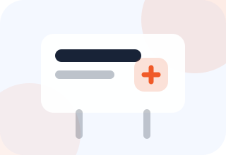
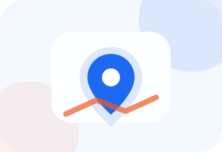
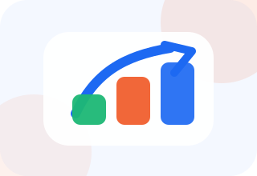

Знакомство
Напишите или позвоните. Разберём вашу ситуацию: город, услуги, текущие источники заявок, средний чек и желаемую загрузку.
Собираем сайт, запускаем Яндекс Директ, подключаем Telegram-бота и передаём доступы. Вы занимаетесь выездами, а система приводит клиентов.

страницы под услуги и город
поиск клиентов с горячим спросом
заявки и отзывы сразу в телефоне
Напишите или позвоните. Разберём вашу ситуацию: город, услуги, текущие источники заявок, средний чек и желаемую загрузку.
Проверим спрос и конкуренцию в вашем городе, чтобы дать реалистичный прогноз по количеству заявок, бюджету и стоимости обращения.
Предложим эффективный формат сайта под вашу нишу. От вас нужен минимальный набор данных для запуска рекламы и предоплата.
Через 2–3 рабочих дня вы получаете сайт, рекламную кампанию и полные доступы. Пополняете бюджет и начинаете принимать клиентов.
Я не против этих источников. Но если мастер хочет управлять потоком клиентов, ему нужна площадка, которую можно развивать, измерять и масштабировать.
Есть зависимость от рейтингов и правил площадки, высокая комиссия и конкуренция за клиента с низкой ценой.

Сложно контролировать результат, дорого покрывать район выезда, а объявления легко теряются среди конкурентов.
Это лучший источник доверия, но его трудно масштабировать. Он работает сильнее, когда у вас уже есть сайт и база клиентов.
Площадка даёт обращения, но правила часто меняются, конкуренция высокая, а масштабирование может упереться в блокировки и демпинг.

Хороший канал, если есть реальная точка. Для мастеров на выезде он подходит не всегда, поэтому его лучше дополнять сайтом.

Константин пришёл после блокировки аккаунтов на Авито и падения дохода. Запустили сайт, рекламу и постепенно расширили направление.
 Клиент из Волгограда
Сайт Константина · нажмите для увеличения
Клиент из Волгограда
Сайт Константина · нажмите для увеличения
Провели консультацию, выбрали базовый тариф: сайт под ремонт холодильников в одном городе за 30 000 ₽ и стартовый рекламный бюджет 15 000 ₽.
Первая неделя дала 10 заявок по 1 400 ₽. Константин выполнил 7 выездов со средним чеком 9 000 ₽ и окупил сайт вместе с рекламой. После докрутки реклама принесла ещё 14 заявок уже по 900 ₽.
Клиент вернулся к прибыли 150 тыс. рублей и расширил сайт: добавили страницы под промышленное холодильное оборудование в Волгограде и Волжском.
Рекламный бюджет вырос до 130 тыс. рублей в месяц. Сайт приносил 160 звонков и около 120 выездов. Клиент подключил коллег и начал продавать часть заявок.
С сайтом проще держать высокий средний чек, меньше разговоров о скидках, чаще приходят заявки на премиальную технику, а база клиентов растёт через повторные обращения и отзывы.

Мы разработали собственного бота: он сразу присылает обращения в телефон, чтобы вы быстро перезванивали клиенту и не теряли горячие заявки.

Запускаю бизнес в интернете: сайт, базовая SEO-настройка и рекламные материалы в Яндексе. Цена указана за подключение одной тематики.
Окупаемость сайта обычно укладывается в 5–10 заявок, а сам сайт остаётся вашим.
Поддерживаем сайт и рекламную кампанию, чтобы продвижение не превращалось в разовую настройку без контроля.
Сделал уже более 400 сайтов и продолжаю делиться практикой, результатами и наблюдениями по ремонтной нише.
Собрал вопросы, которые обычно задают мастера и сервисы перед стартом.
Обычно первые обращения можно получать после запуска сайта и прохождения модерации рекламы. В большинстве проектов старт занимает 2–3 рабочих дня, но скорость зависит от ниши, города и рекламной модерации.
Бюджет считаем после анализа города и конкурентов. Для старта важно не просто потратить деньги, а понять стоимость заявки и оставить запас на первые тесты, чистку запросов и оптимизацию.
Входит запуск сайта под одну тематику, размещение на домене, базовая SEO-настройка, подготовка контактных данных, настройка рекламных материалов и передача доступов после оплаты.
Да, но перед запуском нужно проверить спрос, конкурентов, частотность запросов и примерную стоимость клика. После анализа будет понятно, какие услуги лучше продвигать первыми.
Можно провести аудит: посмотреть структуру, скорость, тексты, доверительные блоки и рекламу. Если сайт можно доработать — доработаем. Если он мешает заявкам, предложим новый формат.
Да. После полной оплаты вы получаете доступы к сайту и рекламным кабинетам. Сайт остаётся вашим, а сопровождение можно подключить отдельно.
Да. Сайт можно расширять: добавлять страницы под новые услуги, бренды, районы, города и отдельные направления, например промышленный холод или премиальную технику.
Просмотрите отзывы клиентов и убедитесь, насколько они довольны моей работой.
 Клиент по ремонту холодильников
Клиент по ремонту холодильниковЗапустили сайт, пошли звонки. Понравилось, что всё объяснили простым языком и передали доступы.
★★★★★ Сервис бытовой техники
Сервис бытовой техникиПосле настройки рекламы стало проще планировать загрузку мастеров и отслеживать стоимость заявки.
★★★★★ Частный мастер
Частный мастерСайт окупился быстро. Клиенты стали чаще обращаться по дорогим ремонтам, а не только по мелочам.
★★★★★ Ремонт стиральных машин
Ремонт стиральных машинОтдельно понравился Telegram-бот: заявки сразу приходят в телефон, не нужно проверять почту.
★★★★★Напишите мне — посмотрю спрос, конкурентов и примерную стоимость заявки. После этого будет понятно, стоит ли запускать сайт и с какого направления лучше начать.
 Холодильное оборудование
Холодильное оборудование Сервисный центр
Сервисный центр